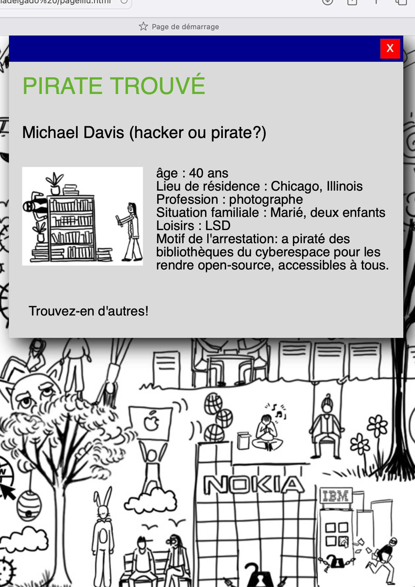

Il m'a été demandé de créer un mini site web sur la cyberculture, tiré du livre “Internet, année zéro” de Jonathan Bourguignon. Le site explorera des concepts clés comme l’utopie, la liberté, la communication et le partage, pour comprendre les origines d'internet. L'objectif est de faire réfléchir les utilisateurs sur les valeurs fondatrices du monde virtuel.
Ce mini site a pour but de faire prendre conscience de l'importance des libertés civiles en ligne à travers un jeu inspiré de "Où est Charlie", tout en explorant comment les divers groupes interagissent dans le cyberespace à travers cette illustration.

Pitch : Le gouvernement vous a chargé d'identifier et d'arrêter les pirates informatiques cachés dans le cyberespace. Démasquez-les parmi une multitude d'utilisateurs anonymes.